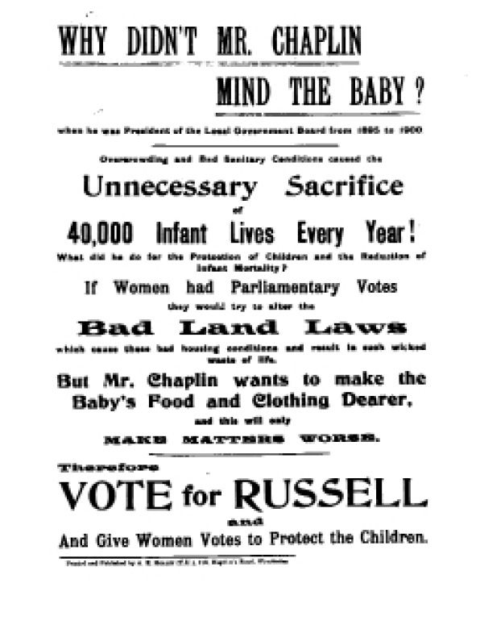
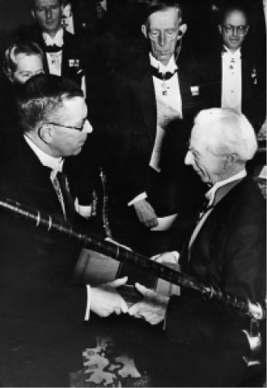
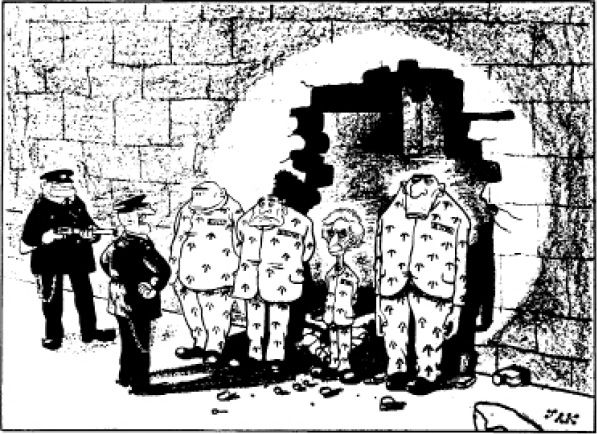

引言
罗素曾积极参与有关道德、政治、宗教、教育以及战争与和平问题的争论，为此写了大量著作。他并不认为它们是严格意义上的哲学著作。正如上一章所说，他把哲学当作一个专业学科，研究有关逻辑、知识和形而上学的抽象问题。在他看来，与此形成对比的上面那些争论则是属于情感和个人意见的范围，事实上涉及人生中的各种实际问题。他承认对于道德话语和政治话语可以进行形式意义上的分析，即对其逻辑形式而不是实质内容做出系统的研究，但是他感兴趣的却是些实际问题和具体问题，特别是在第一次世界大战爆发之后。
尽管如此，罗素在其某些著作中还是尝试过阐明伦理学基础的工作。他不曾想正式提出一种有创见的学说，而是满足于使用一些有意借自别人的看法，这些看法（在他认真关心实际问题之后）带有“后果论”的性质，即认为人和政府的行为必须看其后果来判断其道德价值。同时他的文章（算不上前后完全一贯）有时却又好像相信某些性格特征如勇气、大度和诚实等有其自身的道德价值。他在某些早期著作中也提出过一种与这些更不一贯的观点，即认为道德判断是主观态度经过乔装打扮后的表述。对罗素来说，他的主要问题是如何调和两种互相冲突的东西：一方面是忠于人们深信不疑和热情拥护的道德信念，另一方面则是道德判断明显缺乏理由根据。由于他对能否有一种伦理知识抱有怀疑态度，这种调和变得更加困难。
讲明罗素在伦理学领域的贡献也许最好是说他是个道德家而不是道德哲学家。同他以前的亚里士多德一样，他也认为伦理与政治是相连续的；在认为战争邪恶的伦理判断与争取和平政治要求之间并没有性质上的区别。因此，罗素关于道德、政治和社会的思想是互相连贯的，这就说明他在讨论这些问题最深入的一本书《从伦理与政治看人类社会》中为什么把它们放在一起来研究的道理。
在政治上罗素终其一生是个激进派，从个人小“我”来看，也是个自由主义者。第一次世界大战后，他成了工党党员，在两次选举中当过候选人；他在1960年代撕毁了党员证，因为他憎恨哈罗德·威尔逊支持美国在越南进行战争。但他从来不是照旧的意义来理解的社会主义者，因为在1890年代他为了写第一本书《德国社会民主》（“社会民主”当时就指马克思主义）而去德国研究马克思主义时并未被其说服。他从气质上就反对当时人们所理解的社会主义的中央集权倾向——这实际上是社会主义（或所谓的“社会主义”）在苏维埃世界中唯一得到充分实现的方面——所以他更倾向于行会社会主义，后者是一种非常松散的合作所有制和管理形式，人们可以在向往的理想条件下整合他们在社会、娱乐和劳动各方面的生活。

图8 在1907年温布尔登的补缺选举中，罗素作为议会候选人代表女性选举权参选（图中文字意为：查普林先生为何不在乎婴儿？1895至1900年间他担任地方政府委员会主席期间，由于恶劣的卫生状况，每年有四万婴儿无辜丧生！他做了什么来保护儿童、减少婴儿死亡率呢？如果女性在议会中有投票权，她们就会尽力改变土地恶法，正是这些法律造成恶劣的居住条件，导致生命丧失的悲剧。查普林先生想让婴儿的食物和衣服更昂贵，这只会使情况更糟糕。所以，把票投给罗素吧，让女性有选票从而能保护孩子们）
罗素最善于批评当代的道德和政治状况。他所提出的积极改进意见却往往显得缺少说服力，不是流于空想就是至少（考虑到他提出这些方案时的环境）在某种程度上不可能实行。但是作为批评家、鞭笞者和指责者，罗素与苏格拉底和伏尔泰属于同一类型的人。
任何人也不需要找寻理由或得到许可才参与关于社会大问题（政治、道德和教育等问题）的辩论。人们有理由认为作一个有见识的参与者是公民的责任。因此罗素从事这些方面的活动不需要任何辩解。但是我们有充分的理由认为他的贡献具有某种权威性。理由就是他做这项工作比许多人的条件都优越。这并不是因为他继承了辉格党参与政事的伟大传统，尽管这一点无疑也激发了他这方面的兴趣和参与政事的责任感。倒不如说是因为支持他的兴趣和责任感的四种无比宝贵的优点：非凡的智力、清晰的辩才、广博的历史知识和面对反对意见时表现的大无畏精神。这就使他成了一位令人生畏的辩论家。只是到了他一生快要结束的时候，当他周围的人以他的名义讲话和写文章的时候，他才显得语调刺耳和缺少判断力。
他的某些思想，比如说关于世界政府的信念，至今没有得到多少支持。其他思想则有助于改变西方世界的社会面貌，例如对婚姻和性道德的态度。在其他领域中——特别是宗教方面——罗素也解放了许多人的思想，但是根据他对人性的理解，在他看到迷信在今天比他那个时代还要盛行，看到“信仰是我以生命换取的，教条是我以杀人争取的”这个教条以加倍的猖狂又卷土重来的时候，他是不会感到惊讶的。
理论伦理学
罗素在他最早关于伦理学的思想中抱有浪漫主义的黑格尔主义观点，认为宇宙本身就是善的，是“理智的爱”的适当对象。他接受这个观点是受了麦克塔加特 [4] 的启发，但是这一观点不久就对他失去了的吸引力。罗素对伦理问题最早的认真研究见于他在1910年发表的论文《伦理学要义》，这篇文章表明他遵循G.E.摩尔在其《伦理学原理》中所倡导的学说。摩尔在该书中争辩说，善是一种不可定义的、不可分析的然而却是客观存在的性质，存在于事物、行为和人身上，是通过直接的道德直观行为知觉到的。摩尔抱有某种功利主义的观点，概括讲就是认为对于任何具体实例来讲，应做的正确行为是就该实例而言任何可以最大限度地抑恶扬善的行为。摩尔的观点在布卢姆斯伯利团体 [5] 成员中影响很大，特别表现在提倡下面这一富有吸引力的思想上：友谊和美的享受是伦理上的至善。（不怀好意的批评家说布卢姆斯伯利团体成员喜欢这个观点是因为好像与漂亮的朋友交往就可以省钱云云。）
涉及功利主义观点的各种困难很快便显现出来。困难之一是人们不能完全知道这样而不是那样行事将带来什么后果，所以我们也许在无意中由于思想糊涂或直观错误而造成不良的后果。罗素按照他所理解的摩尔观点承认这一点，但是他争辩说，当我们已经深思熟虑并使用一切知识做了最大努力时，我们的行为便是正确的。然而说善是客观的主张则是另一回事，罗素对它不能长期感到满意，因为严格说来它也许不能被驳倒，但也不能证明其正确，最明显的例子是遇到某人完全不同意另一个人讲他在如此这般的行为或情境面前直观到善的存在的场合。
这一困难使得罗素采取了他在《哲学大纲》（1927）中所表述的观点，即认为道德判断不是客观的（即没有真伪）而是经过乔装打扮的命令句、祈愿句或态度的表述。一个命令句表示一个命令，例如“不得说谎”；一个祈愿句表示一个选择或意愿，例如人们选择一种事物而不是另一种事物，在伦理范围内就有可用“但愿没有人说假话”来表述的例子；而“我不赞成说谎”则是关于说话者对待说谎的态度的表述。命令句或祈愿句显然不具备真值。虽然在态度的表述上情况有所不同，这只是由于这些表述是关于态度的主人的相关心理事实的描述；在谈到说谎的道德价值时并没有涉及真伪，而只是谈到说话者对说谎的看法。
同摩尔的客观主义相对比，这种立场也许可以叫作“主观主义”。他面临同样严重的问题，其中重要的一个是它明显不能言之成理。例如让我们看一看对犹太人的大屠杀。如果认为人们判断大屠杀为邪恶的理由仅仅在于人们不赞成它，这就令人无法容忍。罗素很敏锐地察觉到这种困难，所以在他对这些问题做出的最后的和最详细的讨论（《从伦理与政治看人类社会》）中努力寻找一种介乎客观主义与主观主义之间的立场，兼有两者的优点而避免了各自的困难。
他在《从伦理与政治看人类社会》中争辩说，道德判断实际上是关于社会及其成员的福祉的判断。这类判断体现或表现出某一特定社会中相当广泛的共同感受，后者一般来讲涉及每个人的利益。这是一个可以根据对于世界的科学理解或者至少是合理理解来进行说理争辩的问题。这种认为道德上的两难困境可能得出合理解决的信念在罗素观察人类愚行时常有弃他而去的危险，但是他还是一直坚守着这种信念。
罗素说，伦理学的基本素材是情感和情绪。因此，伦理判断乃是我们的希望、恐惧、欲望或反感经过乔装打扮后的表现。事物满足了我们的欲望，我们便判断其为善。所以普遍的善（整个社会的善）就在于欲望得到全面的满足，而不管享用者是谁。同理，一部分社会的善在于该部分成员欲望的全面满足；而一个人的善则在于他的个人欲望的满足。在这个基础上，我们可以把“正确的行为”定义为：在任何特定情况下最有可能促进普遍的善（或者在只涉及个人的情况下就指促进个人的善）的行为；而这反过来又给了我们对道德义务的解释，也就是说存在着我们“应该”去做的事情；这实际上是说人们应该去做照这样理解的正确行为（《从伦理与政治看人类社会》，第25、51、60、72页）。
罗素当然认识到这种说法有各种困难，并对其中一些进行过讨论。举例说，把“善”定义为“欲望的满足”招来下面这种明显的反对意见：有些欲望是邪恶的，满足它们就更加邪恶。罗素以残暴为例做过考察。如果某个人愿意使别人遭受痛苦，难道这可能是善吗？如果他的愿望得以实现，难道这不是更糟吗？罗素说，他的定义并不意味着说这样一种事态好。首先，这表示受害者的欲望不能实现，因为受害者自然愿意避免受到作恶者加给他的痛苦。其次，整个社会一般不会愿意让其成员成为遭到残暴的受害者，所以在这方面社会的欲望也将不能实现。因此，由于残暴而不能实现的欲望将占到很大的比重，所以残暴是件坏事。
罗素的说法的另一个困难是：欲望可能互相冲突。他回答说，这对我们提出一个要求，即让我们选择那些最不容易相互对抗的欲望。罗素借用了莱布尼茨的一个专门术语，把欲望之间的融贯性称作它们的“共存性”。然后好的欲望和坏的欲望就可以分别定义为可以与最多的其他欲望和最少的其他欲望共存的欲望。
罗素用了一章的篇幅来讲像“残暴是错的”这一类判断是否只是乔装打扮过的主观态度的表达。如前面所说，这个问题很重要，让罗素深感不安。他的结论也许可以叫作他的“社会学的”解答（道德价值是一种社会共识的产物），这是他在考察过伦理学争论所提供的各种可能选择之后得出的。
问题可以这样来表述：通常的事实话语与道德话语之间的区别在于后者中出现“应该”“善（好）”等字词及其同义词。这些字词是属于伦理学的“最小量词汇”即对任何有关伦理概念的理解都是不可定义的和基本的东西，还是说它们能用其他东西例如情感和情绪来定义？如果是后一种情况，那么所说的情感是属于做出道德判断的个人，还是更广泛地指人类的欲望和情感？（《从伦理与政治看人类社会》，第110—111页）
在讨论这些问题时，罗素指出在我们考察某一特定情况下应该做什么所引发的道德上的分歧时，发现许多分歧来自对于不同行为的后果抱有不同的看法。这就表明道德判断依靠对于后果的估计，因此我们可以把“应该”定义为：应该做的行为是就该特定情况讲所有可做出的行为中最可能产生最大“自身价值”（这是罗素用来代替“善”的一个更为确切的说法）的行为。
“自身价值”是可定义的吗？罗素认为是可以的。他说：“考察一下那些我们认为有自身价值的事物，就会发现它们都是我们想要的或给人快乐的事物。很难相信在一个没有感知的宇宙中有什么事物具有自身价值。这就向我们提示‘自身价值’可以由欲望或愉悦或者两者来定义”（《从伦理与政治看人类社会》，第113页）。由于欲望之间有冲突，所以并非所有欲望都有其“自身价值”，罗素因此将这个概念更精确地理解为“精神状态”的一种属性，为经验过这种状态的人所向往。
在经过这种修正之后，罗素对自己的观点作了下面的总结。一般来说，我们赞成或者不赞成某些行为全看我们认为这些行为可能产生什么后果。我们对赞成的行为的后果说“好”，对不赞成的行为的后果就说“坏”。我们把行为本身分别称作“对的”或“错的”行为。在一定环境下只要是对的行为都是我们“应该”做的，也就是说只要是产生最大的善的行为都是“应该”做的。
在这些论点中最有分量的是第一个论点。如果道德评价是一个人们赞成或不赞成的问题，难道我们不是陷进了主观主义的困境，使得我们对于诸如种族主义、不宽容、残暴等等错误不能根据合理的理由来表明态度？罗素的回答是，事实上人们在所追求的事物上有着广泛的一致意见。他同意亨利·西奇威克 [6] 的意见，即认为人们普遍赞成的行为乃是那些产生最大幸福或快乐的行为。如果这包括理智的和审美的兴趣的满足（“如果我们真认为猪比人幸福，我们不应因此而欢迎西尔斯 [7] 的服侍”；某些快乐本身就比其他快乐好），那么我们就可以逃避主观主义；因为这个观点向我们提供了关于应该做什么的陈述句，后者并非经过乔装打扮的祈愿句或命令句，从而具有真值；但这些陈述句仍然建立在关于我们的感情以及欲望的满足的事实之上。关于我们的感情的事实是“对”和“错”的定义的基础；而关于欲望的满足的事实则是“自身价值”的定义的基础。所以罗素自称已经在客观主义与主观主义之间明确表述了一种中间立场，这种立场同时还十分明显地具有实际的说服力，不仅对于在道德争论中普遍有争议的个人行为，而且对于社会习俗、法律和政府政策也都提供了一种评价方法。
尽管罗素对这个观点抱着乐观的态度，它仍然有一些困难。实际上它是说评价的基础在于对欲望的共识。但这却意味着如果某一社会中大多数人比如说厌恶同性恋，那么同性恋就会被认为是坏事，而在一个比较宽容的、民意不同的社会，同性恋便不是坏事了。这种程度的道德相对论言之成理吗？这个困难涉及另一个困难，即衡量一件事后果的价值要看其满足多少欲望，对犹太人的大屠杀的邪恶程度是受害者以及世界大多数人的欲望遭受挫折远远超过纳粹欲望满足的程度的函数，这大多数人也许不愿让种族灭绝成为习以为常的事情（也许是当他们成为受害者的时候）。罗素本人感觉有某种更为有力的东西支持着我们面对大屠杀所感受的道德震撼，但是他的原则并未对此做出说明。
稍稍熟悉伦理学争论的人都会看到罗素在这一领域中努力取得的成就是零散的。甚至《从伦理与政治看人类社会》一书中的讨论也是规劝性质多于哲学性质的。该书根据一些心理学的概括，不过是做出一种追求严格性的姿态；其目的是让我们接受一种实用的做出伦理评价的方法，而不是为伦理学奠定理论的基础。如已指出的那样，部分理由是罗素不相信在伦理学的讨论中可以使用严格的标准；《从伦理与政治看人类社会》中有关伦理学的篇章原本想作为《人类的知识》的续篇，但他因不满意而未公之于世，只是等到最后确定已不能使其包含的论证更加系统化之后，才补充了讲政治问题的篇章而予以发表。但是他并不后悔；他在伦理学上的主要目的，同他讨论社会问题一样，说到底是一种论战的性质。他希望影响人的生活方式，为了这个目的他的努力主要限于倡导和说服的工作。
实用道德
罗素获得诺贝尔奖是由于他在文学上的成就，所举的书则是《婚姻与道德》。罗素写了很多文章谈论实际的道德问题，其中最好的一些文章是他投给报纸的几十篇短文，其中由美国赫斯特新闻出版社在1930年代初期发表的占有重要的地位。在这些短文（字数总是750，符合报纸为专栏留出的篇幅要求）中，罗素给人的印象是观察敏锐、容忍大度、待人宽厚、判断明智——在很多问题上不仅大大走在他那个时代甚至也走在我们这个时代的前头。
我们且举他的一篇文章《论变通》为例。他说，我们把变通与诚实放进不同的范畴，但这却要付出一定的代价。
［《论变通》，收进《凡人与其他》（阿伦与恩温出版公司，1975年）第1卷，第158页］
这就是一种让人学会变通的教育。罗素说，变通无疑是一种美德，但是它与伪善之间的界线却很单薄。区别只是在动机上。如果遇到直率便会让人不快的情境，促使我们让人高兴的动机来自善意，那么变通便是适宜的；如果动机是害怕冒犯别人或是想通过谄媚取得好处，那么这种变通便不那么令人惬意。非常诚实的人不喜欢变通；当贝多芬在魏玛走访歌德时，他惊讶地看到歌德很客气地对待一群愚昧的廷臣。永远诚实、从不说谎的人一般都得到大家的赏识，但罗素说这是由于真正诚实与嫉妒、恶意和心胸狭窄无缘。“这类恶习我们大多数人都沾一点，所以必须实行变通以避免冒犯别人，我们不能都是圣徒，而如果不可能做圣徒，那么至少可以努力做到不要让自己太讨人厌。”

图9 罗素于1950年获诺贝尔奖，图为他从瑞典国王手中受奖
这些话也许并不太重要，但却很有见地，提出的论点值得我们考虑。罗素讲社会问题的报刊文章总是有这些特点：可供欣赏、有趣味并且发人深思。
《婚姻与道德》讨论的是些更大和更迫切的问题。本书集中探讨性与家庭生活。按照罗素的观点，性道德有两个主要来源：男人愿意确信他们是妻子所生孩子的父亲，还有性是有罪的这一由宗教灌输的信念。罗素总是愿意从当代科学中获得启发，在这个方面他从生物学中找寻可以说明习俗起源的理由。这促使他认为人类早期的性道德的生物学目的在于保证双亲对每个孩子进行保护，这是罗素非常赞成的一个好动机。他说，许多压力威胁着现代家庭生活，对此应该加以抗拒。孩子需要双亲的慈爱；另外的选择则是照柏拉图所希望的，把教养孩子部分或全部交给国家去管，而这却是不可取的。如果孩子由国家教养，其结果会使他们过分一律，也许还会过分无情；这样教养出来的孩子会成为政治宣传家和煽动家的良好招募对象。
但是仅就个人性道德而言，罗素认为现代人在言论和行为上表现出更多的自由倾向是件好事。更加自由地发表意见是由于传统道德（特别是宗教道德）约束的放松；更为自由的行为由于避孕方法的改进而成为可能，后者使得女人与男人可以同样控制其性生活。
按照罗素的意见，性是有罪的这一主张给人造成了不可估量的伤害。这种伤害开始于童年时期，一直延续到成年之后，表现为各种压抑及由此造成的心理压力。由于压制性冲动，传统道德也败坏了其他各种友好感情，使得人们不再表现出慷慨和善良，而更偏向专断和残酷。当然性必须受一种道德准则的约束，正如生意和游戏一样，但是这种道德准则不应根据“由生活在一个与我们完全不同的社会中未受过教育的人所提出的古代禁律”。罗素在这里指的是很久以前教会神父所主张的教义。“正如在经济和政治上那样，在性这一方面我们的道德准则仍然受一些恐惧的支配，而这些恐惧早已被现代的发现证明没有道理。”（《婚姻与道德》，第196—197页）
一种以反对传统清教徒教义为前提的新道德必须建立在那种认为应该疏导而不是压制本能的信念之上。对两性生活抱有更加自由的态度并不意味着我们可以照本能行事，为所欲为。这是因为生活必须有其连贯性，我们最值得付出的某些努力所追求的都是长期的目标，而这就意味着推迟短期的满足。此外我们还必须考虑别人和“正直标准”。但是罗素争辩说，自制本身并不是目的，道德传统对于自制的需要应该降低到最小限度而不是升高到最大限度。如果从童年起本能就得到很好的引导，就可能实现第一种情况。传统的道德家认为由于性本能的强烈，所以在童年就必须严加克制，唯恐本能变得无法无天和粗俗不堪。但是健全的生活是不能建立在心神不安和禁律之上的。
因此，罗素认为性道德应该依据的一般原则要简单而且要少。首先，性关系应该“尽可能建立在男女之间的深挚、认真的爱情之上，这种爱情溶进双方的整个人格并且导致一种结合，使每一方都从中得到丰富和扩展”。其次，有了孩子就应该使其在生理上和心理上得到充分的关照。这些原则中没有一条特别令人感到震惊，罗素讲这些话时带有一定程度的反讽意味，因为他意识到自己由于通奸、离婚、未婚同居以及对于向公众隐瞒所表现的满不在乎的态度而受到责骂，这些事在当时都是招来极大非议的。但是这些原则合在一起却表示对传统道德规范做出了某些重要的修改。
一种修改是允许某种程度的通常所说的“不忠”。如果一个人生来所受的教育不把性当作受到各种禁忌束缚的事，如果妒忌得不到道德家的赞许，那么人们就能以更为热情和大度的态度彼此相待。妒忌把夫妻投进相互建立的监牢之中，就好像一方有权支配另一方的人格和需要。“不应把不忠视为可怕的事情”，罗素写道，“坚信深挚而永久的爱具有超越一切的力量”是比妒忌牢固得多的纽带（《婚姻与道德》，第200—201页）。在另外的地方罗素争辩说，没有什么理由反对开放的婚姻（人们有时这样称呼这类安排），只要女人和恋人不生下要由她丈夫养育的孩子。他与多拉的婚姻之所以终结，部分就是由这个问题造成的。
罗素在《婚姻与道德》一书的结论部分说，他所提出的学说尽管有这些关于忠贞的议论，却并不是主张放纵；实际上这种学说同传统道德几乎要求一样多的自制，重大的区别在于自制主要是不去干涉别人的自由，而不是用来限制自己的自由。罗素写道：“我认为可以抱这样的希望，即如果从开始就受到正确的教育，那么就比较容易养成这种对别人人格和自由的尊重；但是对于我们当中那些由于所受的教育而认为我们有权以道德的名义否决别人行为的人来说，不行使这种令人惬意的迫害却无疑是困难的。”幸福的婚姻存在于相互尊重和深挚感情之中。有了这些，男女之间的真正爱情就是“整个人生中最富有成果的经验”；而这正是一切关于婚姻与道德的思考所应努力促成的（《婚姻与道德》，第202—203页）。
当时许多人都对罗素的观点表示出很大的震惊。《婚姻与道德》一书使罗素在1940年失去了他在纽约的工作（尽管如已指出的那样，十年后这本书使他获得了诺贝尔奖，这也说明生活是多么不可预测），加上传说他喜欢女性陪伴，所以许多人说他是个好色之徒。但是关于这些观点有两点值得指出。一是这些观点所表现的见识显得镇定而宽容。二是它们并非从天而降；事实上这表现出1920年代和1930年代左翼知识分子先锋派共同抱有的一种态度，对他们来说自由恋爱和反对性妒忌已经是不成文的原则了。罗素具备必要的勇气和清晰的逻辑说服力来表达这些思想，希望把新鲜空气送进生活中最需要它的地方。尽管在过了一个世纪之后，人们的态度和实践都发生了革命（其所以可能一部分原因也是由于罗素的倡导），作为对抗反动的特效药，他的论证仍然值得我们去读。
在罗素关于人际关系的看法中有三个题目经常出现。一个是宗教有害，另一个是需要良好的教育，第三个是个人自由。每一个题目都是罗素社会思想中长期探讨的话题，他都给予了充分的注意。我将逐一加以考察。
宗教
当人们得知罗素并不是个无神论者时会大吃一惊。相反，他是个存疑论者。前后一贯的立场要求他承认也许有存在着神的可能，但是他认为这类事物存在的可能性非常小，而且如果有这类事物（特别是像基督教正统的上帝）的话，人们在道德上对世界的憎恶甚至会比现在还要强烈，因为这样我们就得要么承认一个万能的上帝允许世界上存在自然界的和道德上的邪恶，要么承认这就是上帝的意愿（“自然界的邪恶”指疾病以及诸如地震、台风等天灾）。按照罗素的看法，走访一所儿童医院的病房就足以让人觉察到不可能有神，如果有也是个凶恶的妖怪。
人所共知，有人问罗素在他临死时如果竟然发现上帝存在，他又该怎么办？他回答说，他会责备上帝不提供关于他存在的充分证据。有人又问他怎样看待“帕斯卡的赌注”。这种观点是说我们应该相信上帝存在，即使有关其存在的证据微乎其微，因为这样做的好处远比上帝不存在带来的坏处要大。罗素回答说，如果上帝存在，他也会赞成那些不相信上帝存在的人，因为他们动脑筋看出：让人相信上帝存在的证据并不充足。
罗素通常使用的方法是：除非有正当理由，否则就不承认一个命题。自然神学（“自然神学”是指关于神的概念的讨论，不涉及在圣经或神秘经验中出现的具体启示）中有关上帝存在这个命题的中心部分是大家熟知的各种“上帝存在的证明”所组成的集合。罗素在《我为什么不是基督徒》（1957年；最初作为讲演发表于1927年）中曾讨论过这些证明。
第一个是最初因的论证。这个论证说万物皆有原因，所以必然有一个最初因。但是罗素说这个论证前后并不一贯，因为如果万物都有原因，那么最初因又怎能没有原因？根据某些看法，上帝是以自己为原因的原因（在亚里士多德那里叫作原动者），但是要么这种观念前后不一贯，要么如果它指示某种可能有的事物，那么或者整个论证所依据的普遍因果关系原则（它似乎蕴涵着原因一定不同于其结果的道理）是错误的，或者如果原因可以是自身的原因，为什么只有一个这样的原因？
第二个论证是根据宇宙显示出图式而得到的结论：有图式就必有设计者。但是一则因为图式可以从演化中找到解释，并不需要涉及宇宙中另外的实体，而且与经验材料相符合；二则因为不管怎样也找不到显示世界总图式的证据，而事实（这符合热力学第二定律所说的世界实际上正在蜕变的说法）却让人想到相反的结论。
第三个论证说，必须有个神作为道德的根据。然而这是说不通的，因为正如罗素在别的地方简单扼要地争辩过的那样，“神学家总是教导人们说，上帝的天命是善的，而且这并不是同义反复：因此善在逻辑上并不依靠上帝的天命”（《从伦理与政治看人类社会》，第48页）。也许我们还可以进一步说，如果认为神的意志可以作为道德的根据，那么一个人按道德行事的理由就只是出于慎重，为的是免受惩罚。但这显然不是令人满意的支持道德生活的基础，而无论如何在任何论证中威胁也不能作为逻辑上有力的前提。
康德用过的一个相关的论证是：必须有一个上帝来奖赏善行并惩罚邪恶，因为从经验得知在现世生活中显然并非总是甚至并非常常是善有善报。然而罗素说这就像是在讲因为柳条筐上层的所有橘子都腐烂了，所以靠下面的橘子一定是好的；这是荒谬的。
许多反对宗教的人虽然痛斥宗教在世界上煽起了迫害与不和，却仍觉得耶稣基督是个有魅力的人物。罗素并不这样想。他觉得耶稣不如佛那样温和、仁慈，而在智力和品格上又远远不及苏格拉底。他的某些行为令人不快，比如说他毁了那棵无花果树——它不能结果是由于过了季节，以及威胁说要用永世的苦难来惩治不信奉他的人。罗素指出，许多世纪以来，只要符合教会的利益，教会就促使人们按字面的意思去相信这些带血腥气味的警告。但是在一个比较合乎人道的时代，当批评家指出这些话多么可憎的时候，教会却改口说它们只应该按照比喻的意思去理解。
但是罗素的攻击火力主要是对准作为一种有组织的现象的基督教。他痛恨迷信（“罗马天主教会说神父能通过对一块面包讲拉丁文就将它变成基督的身体和血液”）及其完全不合逻辑的性质（“我们被教导说星期六不要去工作，而新教徒则把它理解为星期日不要玩耍”）。按照罗素的观点，基督教与其他宗教的不同就在于它喜好迫害。基督徒们折磨并杀害异教徒、犹太人、自由思想家，还互相残杀；他们淹死、烧死并用其他方法谋害成千上万的无辜妇女，说她们行使巫术；基督教还用其关于罪和性的荒谬教义来摧残亿万人的生命。
罗素在反对宗教的战争中使用的武器主要是嘲笑和鄙视。他比他的对手们更熟悉《圣经》，能摘引适当的句子搞得他们不知所措，例如他在讨论宗教与科学的相对优点时说：“《圣经》告诉我们野兔反刍”，这就让原教旨主义者在面对动物学时感到不好办。宗教与科学之间的不同确实是再明显不过了。宗教讲的是绝对的和无可争论的永恒真理；科学则比较小心谨慎并带有尝试性。宗教给思想加上限制，禁止进行与教会信条相冲突的探讨；科学则抱着虚心的态度（《宗教与科学》，第14—16页）。这些都是生动有力的对比。在科学理性面前，宗教最好不再顽固坚持原教旨主义的立场，而要用寓言的方式解释经文，并把宗教真理高于人类理解的主张隐藏不用。
但是尽管罗素对宗教抱有敌意，他本人倒是个有着宗教般虔诚态度的人。这是一个表面上的悖论。一个人可能以宗教态度对待生活而不相信有超自然的存在物和现象。这样一种态度就是欣赏艺术、爱情和知识的态度，它给人类的精神提供营养，并且使人在世界和他所爱的人面前有一种敬畏之感，同时还感受到有一个包括自身在内的无限广阔的天地。罗素在《一个自由人的崇拜》这篇文体过分华丽的有名文章中所表现的正是这种心灵境界（这篇文章是在他第一次婚姻失败和随之而来的人生观改变的影响之下写成的）。然而文章还是带有悲观的保留态度：
正如这段文字所表明的，罗素对于超然境界（即斯宾诺莎所追求的使人获得自由的梦想：对万物有一种完全透彻、冷静和全面的理解）的渴望总是忘不了世上有人遭受苦难的严酷事实。他在其《自传》的前言中写道：“爱和知识，只要可能存在，便是通向天国的途径。但是怜悯总会把我带回到现世上来。”因此可以说，罗素以存疑的态度渴望天国，并努力找寻使人类到达天国的途径。
教育
罗素希望，在这些途径中主要是依靠教育；在他看来，这是一个人们应该怎样准备去生活的问题。他并未特别关注设立学校和大学以及师资训练的行政细节，像韦布夫妇 [8] 也许可以做到的那样，而是谈论教育要达到的可以称之为精神上的（仍是就其世俗意义而言）目标。他写道：教育的目的是培育品格，而最好的品格是具有“最大限度的”活力、勇气、机敏和明智。这就是他在1926年出版的《论教育》一书中所发表的意见，一年以后他就和多拉创办了毕肯希尔学校。这本书主要讲童年早期教育，罗素在自传中承认“他的心理学过分乐观”，他所建议的方法在某些方面也“过分严厉”。比如说他从蒙特索里 [9] 教育原则搬来的那种看法，即认为如果一个孩子的行为不好，就应该把他隔离开，直到学好为止。罗素后来认识到这是一种残酷的纪律处分。
然而《论教育》还是包含了一些正确的建议。罗素争辩说，从最小年龄开始，婴儿就应过有规律的日常生活，并且要给予他们尽可能多的学习机会，但是父母应该掩盖自己的焦虑，以免“通过感染而传给孩子”。这个主张反映出罗素的一种信念，即认为由于在其他高级哺乳动物中焦虑并不属于本能，所以儿童出现焦虑必然是从成年人那里学来的。同时罗素还告诉读者不要为了尽父母的责任而牺牲自己，而是要在他们自己的兴趣与孩子的兴趣之间保持适当的平衡。
罗素相信知识本身既使人思想自由又保证人不受恐惧的危害。对于外界事物的浓厚兴趣（这也是他的《幸福之路》一书中的一个主题）是对于过一种有勇气的快乐生活的强有力帮助。罗素也告诉人怎样提倡诚实与大度：不是依靠惩罚说谎与不宽容（因为表面上看来似乎是说谎的行为实际上也许是出自我们的想象），而是依靠鼓励诚实与大度实际体现的积极品质。他后来承认，正是在这一方面，也许他对幼童心理抱有过分乐观的态度。他当小学教师的经验很快就让他知道，儿童们有做坏事的能力，而如果做坏事不受到惩罚，那就会发展到可怕的地步，正如《蝇王》里讲的那样。
但是即使就这些早期观点而论，罗素也未曾主张放任原则，特别是关于学习。他相信培养自我约束和集中注意力的习惯从长期来看起着解放思想的作用；尽管他争辩说应该靠吸引儿童的注意力而不是靠强迫他们去完成作业，他并不反对必要时还得让他们刻苦学习。他说，儿童到五岁就应该学会读，并应及早开始学习两种语言。学生需要而且应该得到数学基本知识的训练。到了上小学的年龄就能够欣赏诗歌与戏剧，但是真正鉴赏文学则是以后的事。学习经典作品、历史和科学要更靠后一些；到了这个阶段，学生在学过这些科目之后，应该自己选择最感兴趣的学科继续钻研下去（《论教育》，第18—162页）。
这些有关课程的看法还是相当符合传统习惯的。不符合传统看法并因而在当时招来诽谤的是罗素关于性教育的说法。许多关于毕肯希尔学校的流言一下子传播开来；据一个很有代表性的故事讲，有位主教到门口碰见一个赤裸着身子的孩子，大喊了一声“上帝啊！”，那个赤身的孩子却回答说“没有上帝”。但是事实上罗素所争辩的只是不应让孩子们为自己的身体感到不安，所以应该在青春期到来之前就把性机能从容地告诉他们，因为及早开始性教育的一个有力理由是，孩子们由此将不会通过不适当的和过于兴奋的方式得到性知识。罗素同当时的一般医学意见有着惊人的一致之处，那就是怀疑手淫是否是件好事，所以至少在这个问题上人们显然不能指责他发表过什么危险意见。
五年以后，根据自己办学的第一手经验，罗素写了《教育和社会秩序》（1931）。他在书中仍然坚持他在《论教育》中所说的大部分意见，但是现在却将其称作“消极的”理论，承认需要加以补充。根据这个“消极的”理论，教育的任务在于提供机会和消除障碍，好让孩子们能够按照自己的方式去发展。罗素现在看到另外还应该让孩子们接受与人相处的积极教导。他在毕肯希尔由于看到一些恃强凌弱的事而感到震惊，认为这是成年人甚至整个国家的残暴行为的缩影。他对于人的本性中就有非理性和侵略性所抱的担忧由于这一经验而加深了，这使他为世界感到绝望，因为这也似乎表明国家主义和战争是人类境况中不可避免的事情。
图10 罗素对毕肯希尔学校严重的校园恃强凌弱现象深感震惊。他视之为成人世界野蛮行为的缩影，认为它表明了国家主义和战争是人类境况不可避免的部分
罗素从来不过分夸大对教育的期望。但是尽管因实际的教学实验而感到幻灭，他还是保持着他所特有的自由信念，即对于一个更美好的世界的希望必须主要寄托在教育身上。罗素在他论述社会与政治问题的通俗著作中确实正是不知疲倦地在做这件事：以全世界为课堂进行教育。不管发生什么事情，他从来没有放弃这一希望：只要在儿童时期给予孩子正确的指导，就可以培养出有活力、勇敢、机敏和明智的人。
政治
罗素认为，我们要想了解政治，就必须了解权力。从历史上看，一切政治制度都扎根于权威；起初是一个部落或国王的权威，人们出于恐惧而顺从他；后来则服从王权制度，人们出于习俗而效忠它。有人认为文明社会产生于最初的“社会契约”：按照契约，个人放弃一部分自由以换取社会生活的利益——其中最重要的就是安全。罗素不同意这个看法。他说，假如真有最初的契约，那是在上层统治成员之间的“征服者的契约”，他们签署契约是为了巩固其地位和特权（《权力》，第190页）。
照罗素的观点看，历史表明君主制构成了最早形成的政治制度。权威通过各个社会等级往下传，从国王（在许多政教制度中自称其权威受之于天）起传到贵族、乡绅等等阶层，最后传到住在茅舍、地位最卑微的一家之长。这种制度在其能够得到人们的效忠时，具有使社会凝聚起来的优点。其缺点则在于专制统治者没有施仁政的动力；有许多实例表明这类制度可以变得暴虐和残酷（《权力》，第189页）。
罗素说，君主制的天然继承者是寡头政治，后者有许多不同的形式：贵族统治、财阀统治、教会统治或政党制度。在中世纪的自由城以及拿破仑占领前的威尼斯，由富人掌权治理，罗素认为这种统治运作得很好，但是他认为现代的实业大亨还达不到同样的水平（《权力》，第193页）。正如君主制在取得臣民效忠时能够产生社会凝聚力一样，教会统治和政党寡头政治通过共同的信仰和意识形态也能做到这一点；但是它们的重大危险在于其对自由的威胁。这类寡头政治不能容忍与他们观点不同的人，也不允许可能向他们垄断的权力进行挑战的组织存在（《权力》，第195—196页）。
然而罗素看到，在各种寡头政治下，只要保证有自由，就可以得到一种好处，即它们允许一个有闲阶级的存在。理由在于闲暇是繁荣精神生活（文学、学术和艺术）的一个条件。在过去这要许多人做出牺牲，这些人不得不做长时间的劳动，好让少数人得以享受所需要的各种自由。但是罗素相信，只要善于利用现代工业技术，“我们就能够在二十年内消除全部赤贫、大约半数的疾病、压迫世界十分之九人口的整个经济奴役制度：我们能让世界充满美丽和欢乐，保证世界和平”（《政治理想》，第27页）。罗素在1917年发表了这些带有空想性质的议论，在战争的黑暗年代给人点燃了希望之光，但是这些话并非完全没有道理：有了科学的成功并将其合理应用于和平目的，就没有理由认为不应让更多的人享用更多的闲暇，从而让他们可能有更多的条件去过充满创造力的富裕生活。这样一种可能性否定了维护允许有闲阶级存在的社会结构的论证，转而赞成民主政治，发出追求正义的强烈要求。
罗素说，民主政治与寡头政治的不同仍然只是个程度的问题，因为即使在民主制度下也只有少数人能够掌握真正的权力。这就使罗素对于受到高度赞扬的英国议会模式也表现出不屑一顾的轻蔑态度，因为一般议会议员实际上只不过是他（或她）的政党手中的投票工具。但是民主政治的前景还不是漆黑一团，因为虽然民主政治不能保证有好的政府，却可以防止某些邪恶，主要是靠其确保不让坏的政府永远掌权（《权力》，第286页）。
在罗素看来，民主政治最大的优点是它与受到他高度评价的“个人自由学说”紧密相关。这个学说由两方面组成。第一个方面是个人自由受到正当法律程序要求的保护，使人免受任意逮捕和惩罚。第二个方面是个人有不受当权者控制的行动范围，包括言论与宗教信仰的自由。这些自由并不是没有限度的；例如在战时为了国家安全，也许有必要限制言论自由。罗素认识到在整个社会利益与希望得到最大自由的个人利益之间的确可能有很多对立。他说：“一个政府在它能够信赖人们行动上的忠诚时，给予他们思想自由并不困难；但是当它不能得到人们行动上的忠诚时，事情就会比较困难。”（《权力》，第155页）
对于罗素来说，政治组织的问题从根本上说是经济组织的问题。罗素早年，在第一次世界大战之前，是个自由贸易的拥护者，他还一直是个自由企业的支持者，其有力理由便是他反对让经济力量过分集中在任何一个集团手中，不管是资本家还是政府。他看不出有什么理由认为人不该富有，只要钱是自己挣来的，但却反对继承财富的思想。尽管他成年时期绝大部分都站在社会主义一边，但这却是某种经过特别修正的社会主义。他说，政府控制经济事务是为了防止经济上的不公正。但是正如从苏联进行的共产主义实验所看到的，把生产资料的所有权或控制权都收归政府并不是最好的办法。罗素还是喜欢那种在法国叫作工联主义而在英国则叫作行会社会主义的学说；这种学说主张工厂应由本厂工人管理，而企业也应组成行会。这些行会将向国家交税，以换取原料，此外则有权决定工资和工作条件以及出售产品。各行会还可以自己选出代表大会，而产品的消费者则选出议会，两者结合起来便可以构成国家政权，决定税收并作为国家最高法院裁决工人与消费者的利益（《自由之路》，第91—92页）。为了确保行会的存在不危及自由，特别是发表意见的自由，罗素建议每个人不管是否工作都应得到一份微薄的最低薪金，这样每个人只要愿意都可以保持相当的独立性。任何一个想得到超过这份最低薪金的人就要去工作，工作越多就越富有。对此，明显的反对意见是：这个方案是行不通的，因为如果人们选择不去工作，那么就会出现没有税收同时却要得到最低薪金的局面。罗素对这种反对意见表示不屑一顾，他说大多数人都愿意为了过富裕的生活而去工作；不管怎样，行会社会主义下的工作条件和生活条件都比较舒适，所以人们不会反对工作（《自由之路》，第119—120页）。
行会社会主义的重大原则问题是权力（这个最重要的政治商品）的下放。照罗素的观点看，权力的集中，特别是集中在政府手中，增加了战争的可能性。因此把权力分散到许多集团或个人手中是非常值得向往的事情。“除了维护秩序以外，实现国家的积极目的不是靠国家本身，而是应该尽可能靠各个独立的组织。这些组织应该得到完全的自由，只要它们满足国家的要求即提供的钱不少于必需的最低薪金。”（《社会改造原理》，第75页）罗素在其较早时期的政治思想中就表现出这种观点，此后一直坚信不疑。他在《权力》一书中争辩说，目前比任何时候都更有必要防范官方的暴政、宣传和警察，就后者而言他首次提议事实上应该对监管者进行监管：一支警察力量应完成通常为了逮捕嫌疑罪犯而搜集必要的证据并提出指控，而另一支警察力量则应搜集证据来证明这些人无辜。
罗素在政治上反对权力集中的倾向与他对国家主义所抱的敌视态度密切相关。第二次世界大战之前，他指责国家主义是一种“愚蠢的思想”，是“我们这个时代最危险的恶行”，它预示着欧洲的毁灭。第二次世界大战之后，他看到国家主义在苏联和美国重新抬头，只是这次由于两国都拥有大规模毁灭性武器而危险得多。他争辩说，制止国家主义及其威胁的办法就是建立世界政府。
从表面上看，这种信念与罗素反对权力集中的信念似乎不大一致，他也承认把军事力量交给一个唯一的世界权力机构的危险。但是他认为这比再发生世界大战要好得无法估量，在这种战争中会使用具有更大毁灭力的武器，从而可能消灭地球上的生命。在罗素看来，这是罪大恶极，所以不管什么事情都胜过它。但是建立一个世界政府并不一定仅仅是两害相权取其轻之举。要对世界政府保持某种程度的控制，一个办法也许是除了军事力量之外，把权力尽量下放给最小的实际运作的地方单位。然而罗素最后还是说：
（《社会改造原理》，第66页）
怎样才可以产生一个世界政府？各国政府不大可能愿意放弃其主权来支持一种乌托邦式的理想。照罗素的看法，最有可能使用的方法是一个强国或强国集团最终将控制世界，从而在事实上构成世界政府。按照冷战的说法，北约与华约（或者更准确地说是其各自主要国家）可以看作是在为了取得这一结果而相互竞争。罗素认为这类似中古时期正常运作的政府的发展：国王取得权力，然后通过一种演变过程，主权越来越受到民主的控制。他认为这样一种过程也许可以发生在世界政府身上。“国际关系中由秩序来取代无政府状态，如果得以实现，那将是通过某一个国家或国家集团的超级力量来完成的。只有在建立这样一个唯一的政府之后，走向民主形式的国际政府的演变才有可能开始。”他认为这也许要用一百年，在此期间大概已经开始赢得“某种程度的尊重，从而有可能把权力建立在法律和意见而不是武力基础之上”（《对改变中的世界的新希望》，第77—78页）。
罗素关于政治和政府的全部思想中有一个主题，这就是让个人自由与国际和平取得平衡的问题。但是它们之间的竞争最后还会分出胜负。如果人类被战争消灭，那么不仅没有这样的自由，而且连这样的自由的可能性也没有了。因此罗素为了拯救人类而愿意牺牲或者推迟获得自由。自然他希望能够同时拥有和平与自由；但是根据他从人类身上得到的经验，他却无法否认人类的贪婪、残暴和非理性以及其他共有的特点使得这种希望难以实现。他写道，这种想法使他常常陷入绝望。第一次世界大战时期，看到多少万人被迫在欧洲的土地上进行毫无意义的相互残杀，他已经感到绝望。第二次世界大战之后，核武器的可能受害者不再仅仅是军队，甚至也不再仅仅是各国人民，而是（最坏的一种可能）世界上的全体居民。这该使罗素感受到多么大的绝望。从一种观点看，只有极少数人具有看清这一事实的眼光，也只有极少数人具有感受到其恐怖可怕的想象力。罗素特别值得称道之处正在于他兼备了这两种优点。
战争与和平
罗素反对过布尔战争和第一次世界大战，支持过第二次世界大战中盟国的战争努力，并曾有力地奔走阻止第三次世界大战的立即爆发，还强烈抨击过越南战争的现实。他终生致力于向战争宣战，直到以九十七岁高龄去世为止。他早年和晚年的反战活动都招来敌视并使他被关进监牢。然而现在谁也不能说他站错了立场；而当极端爱国狂热和沙文主义表现冷却下来，人们比较清醒地权衡付出这笔巨额经费的理由时，他们才在事过之后开始像罗素当时以天才的眼光所观察到的那样来看待战争。

“不说是吧！最后问一次：谁是幕后主使？”
图11 这幅漫画出自《标准晚报》，表现的是罗素于1961年9月被判入狱一周的情形，原因是他被认定在伦敦市中心举行的悼念广岛的大型和平集会后扰乱公共秩序
罗素从未改变过他认为没有必要打第一次世界大战的看法。德英两国在1914年除了国家荣誉和某些有关帝国利益问题可以解决的摩擦之外，并不存在真正的争执。他认为本来可以通过谈判避免敌对行为，谈判本来会缓解德国情理之中的不满，感到它在殖民地竞争中未能顺利取得本来也许可以取得的成功。然而欧洲各国的外交部里的职位却被一些贵族所占据，决定他们行为动机的是骄傲自大而不是基于常识的考虑。
在第一次世界大战期间，反对罗素的人争辩说，德国的罪行是侵略和扩张主义，并谋取在欧洲的霸权；这威胁到英国的自由，因为一旦德国战胜，一切事物都会打上专制和官僚制度的烙印。所以英国有足够的理由来打仗。罗素既不承认这种嫁祸于人的理由，也不相信英国如果不打仗便会招来那种可能有的后果；他认为这会很像重演一遍1871年普法之间那次短暂而具有决定性的冲突。但是即使德皇获得胜利——这是件坏事，但也比不上大战本身那样邪恶——罗素的主要论点仍然是：人们总得有压倒性的正当理由才能去打仗，而这在1914年是不存在的。
1939年的情况却非常不同，在1930年代，罗素实际上是个绥靖主义者，正如我们可以从1936年出版的《怎样获得和平？》这本书所看到的那样。然而他并没有让该书重印，因为当他写完时他已经感到这并不是诚实的态度，1930年代的形势与1914年太不相同了：
（《自传》，第430页）
他觉得被这样的人打败这个念头是“不可忍受的，最后才有意识地、明确地决定我必须支持为争取第二次世界大战的胜利需要做的事情，不管取得胜利可能有多么困难，其后果又是多么痛苦”（出处同上）。
太平洋战争由于对日本城市投掷原子弹而取得令人惊骇的结局，这立即让罗素注意到必须对某种全新的事物加以考虑。1945年11月他在上院的讲演中给贵族议员们发出了警告。最初他想到美国应该利用原子武器的优势迫使俄国不发展这种武器。这曾被人解释为罗素要求美国应该对俄国发动一场先发制人的原子弹攻击；但实际上他并未走到这一地步。他看到美国有机会凭借其军事优势来建立世界政府，便力促它这样去做。尽管他认为美国有许多缺点，他还是喜欢它的自由和民主的总趋势而不是苏联的暴政。在第二次世界大战以后的岁月里，罗素甚至还加深了他对苏联的敌视（1920年代初期对苏联的访问就使他相当反感）。十五年后他开始用同样激烈的言辞来谴责美国人，由此可以看出他对越南战争的憎恶程度。然而这种态度的改变并不是突然发生的。美国的麦卡锡主义及其在海外由好斗的麦卡锡主义分子推行的反共外交政策逐渐使他认为美国人对和平的威胁比苏联更大。1961年古巴导弹危机加强了他的这种看法。从此以后他坚决反对美国。
在原子武器问题上促使罗素改变态度的首先是苏联在1949年获得了原子弹，然后是1954年英国在比基尼岛进行了核试验。对于后一件事他发表了一篇有名的圣诞节广播演讲，题为《人类的危险》，警告英国和全世界，提醒每个人注意现在面临的可怕危险。这篇演讲是个转折点；此后才真正开始了反对储存大规模毁灭性武器的运动。给他的信件像潮水一般涌来。他利用这次广播的势头，组织了一次由知名科学家签名的国际性请愿书。他从未停止英国应该废除其核武器的要求，他争辩说这样做的理由之一是给其他国家在道义上带个好头。
1950年代随着国际局势的恶化和他个人的努力遭受到挫折，他对于应该怎样对付世界目前面临的危险在看法上有了改变，他写文章，发表广播演讲；除了请愿，他还组织过一次让“铁幕”两边的科学家坐在一起的讨论会；他参与建立核裁军运动的努力并担任第一任主席。由于这些和平的和认真说理的手段在政府的顽固态度面前屡次碰壁，他变得更加绝望了。他辞去了核裁军运动中的职位，参加了激烈得多的一百人委员会，后者开始了一场非暴力反抗运动。这场运动使他再次身陷囹圄，与他第一次入狱时间相隔42年。在这里没有什么谈论理论的余地，因为罗素感到没有时间去谈理论；需要做的是行动。
到了晚年，罗素的注意力完全集中到越南战争上。现在他周围的人以他的名义发表一些出版物和新闻稿件（从语法和口气上看，不像出自他本人之手），他攻击美国，特别是其军事联合企业和中央情报局，指控它们侵略越南，犯下战争罪行，他同让—保罗·萨特和其他人一起倡议组成国际战争罪行法庭，旨在让美国为其在越南的行为受到审判。当时人们认为法庭对美国的指控纯属歇斯底里的叫喊。随着后来美国政府档案的公布，许多指控现在已经证明属实。
罗素反对第一次世界大战并且反对越南战争，其中至少有一个方面很明显是前后一贯的。这就是他认为两者都不存在真正的善受到危害的问题，两者都是受人类最卑劣的本能——残暴、愚蠢、侵略的本能所驱使，这些本能一旦失去控制便什么事都干得出来：轰炸妇女和儿童，使用有毒化学物质，用宣传和谎言蒙骗本国人民。罗素在他度过漫长的一生到临终一定会发现这一事实的可怕，即从1914到1970年之间军事武器的毁灭力已经发展到前所未有的水平，但是人类却丝毫也没有改变。